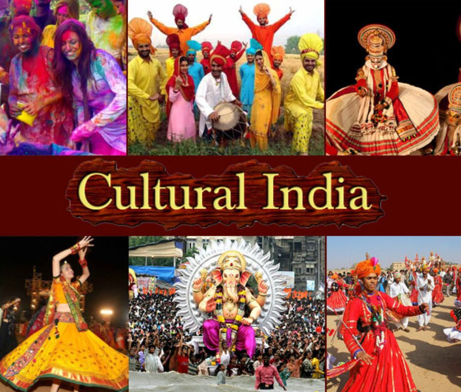

Profile
Indian culture is a rich, diverse, and millennia-old tapestry of traditions, religions, arts, and social practices that vary across regions and communities.
Indian culture has evolved over several millennia, beginning with the Indus Valley Civilization and other early cultural centers, making it one of the oldest continuous cultural traditions in the world. It encompasses a wide range of ethno-linguistic groups, religions, and regional practices, reflecting the country’s vast geographic and demographic diversity.